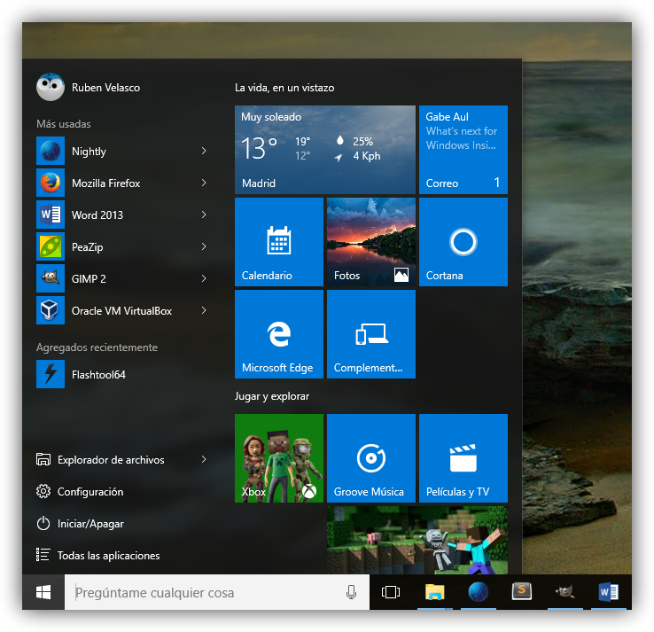

Menú Inicio con interfaz Modern UI.
Una de las principales críticas que recibió Windows 8 fue la ausencia del menú Inicio y la implementación de la interfaz Modern UI que se distinguía por presentar los programas como baldosas, azulejos o "tiles" (como desees llamarlas) en pantalla, para acceder a ellas fundamentalmente a través de pantallas táctiles. Lamentablemente, el resultado fue una interfaz cuyo manejo resultó confuso para muchos usuarios. Por otra parte, hay que añadir que no se limitaron a recuperar el menú Inicio de la versión 7 de Windows, le dieron características nuevas que le añaden funcionalidad y que resultan muy interesantes, independientemente si se manejan con el ratón o directamente con los dedos en pantalla.
Vista de tareas y Escritorios virtuales.
Otra característica interesante a tener en cuenta en esta nueva versión de Windows es la aparición, por primera vez en este sistema operativo, de los Escritorios virtuales. Si por alguna razón necesitamos trabajar con muchos programas o documentos al mismo tiempo, podemos organizar sus ventanas en escritorios independientes entre sí, de modo que cada escritorio contenga sólo una o dos ventanas y luego podremos movernos entre los escritorios fácilmente, añadiendo orden al trabajo.

Microsoft Edge.
Otra de las novedades más destacadas de la nueva versión de Windows es la sustitución de Internet Explorer por su nuevo navegador de Internet llamado Microsoft Edge. A su vez, no se trata sólo de una sustitución de un programa por otro, sino que además incluye características que no están presentes en otros navegadores, como la posibilidad de hacer anotaciones en las páginas y crear listas de lectura, entre otras opciones, lo que lo hace único.
Aplicaciones multimedia: Fotos, música y películas.
Windows 10 incluye tres aplicaciones nuevas para el manejo de los archivos multimedia: Fotos, Música y Películas. Fotos recopila y organiza todas las imágenes de nuestro ordenador dándonos un acceso simple a ellas. En el caso de Música y Películas, tendremos acceso a contenidos en línea a través de la tienda Windows.
Cortana, asistente personal por voz.
Microsoft ha decidido incorporar su propio asistente personal de voz para hacerle competencia a Siri de Apple y a Google Now. En este caso se llama Cortana. A este asistente no sólo puedes hacerle cualquier consulta que desees, también puedes ordenarle algunas acciones en el ordenador o usarlo como herramienta para recordar citas y tareas. Además, es el lugar donde realizamos búsquedas de archivos y contenidos de Internet, como veremos en su momento. También cuenta chistes, pero digámoslo de una vez: no son muy buenos.
OneDrive integrado.
OneDrive es un servicio de almacenamiento en la nube que ya existía antes de Windows 10, sin embargo, en esta versión han mejorado la integración con el sistema operativo y con el Explorador de archivos, de modo que su uso es muy sencillo. Sin embargo, requiere que nos identificamos en Windows con una cuenta de Microsoft, como veremos más adelante.
Continuum.
Continuum es una nueva característica de Windows 10. Podemos definirla como la capacidad del Sistema Operativo de adaptarse a las pantallas de los distintos dispositivos que estemos utilizando. En otras palabras, el menú Inicio tendrá una apariencia en una computadora de escritorio y otra,mejor adaptada, en un teléfono móvil o en una tableta. Lo mismo ocurre con las aplicaciones. De modo que el uso de las funciones se facilitará aún más en cada dispositivo.
Xbox integrado.
Los fanáticos de los videojuegos podrán disfrutar de esta característica de Windows 10, pues podrán contar con todos sus récords, tags de juegos, niveles grabados, etcétera de su consola Xbox en su propio ordenador PC. Y si la capacidad del equipo lo permite, podrán continuar con sus juegos en línea, por supuesto.
Centro de actividades.
El Centro de actividades es una nueva zona en la pantalla principal de Windows que nos permite recibir y revisar las notificaciones del sistema, así como elegir diversas acciones, como cambiar el ordenador a modo avión o modificar la pantalla a modo tableta.
Tienda de aplicaciones.
La implementación de la Tienda de aplicaciones viene de la versión 8 de Windows. Sin embargo, podemos decir que la integración con el nuevo Windows 10 la convierte en una especie de relanzamiento. Es aconsejable explorar la tienda, hay un buen número de aplicaciones gratuitas que pueden resultar interesantes.
Hello.
Con esta característica y equipo compatible no necesitaremos usar contraseñas para iniciar una sesión de Windows, pues el ordenador podrá utilizar el reconocimiento facial o las huellas dactilares. En algunos ordenadores con los dispositivos necesarios, también podrán implementar la identificación del iris. A su vez, los datos del usuario pueden encriptarse, de modo que sólo el propietario de los mismos, identificado por los métodos mencionados, podrá acceder a ellos.